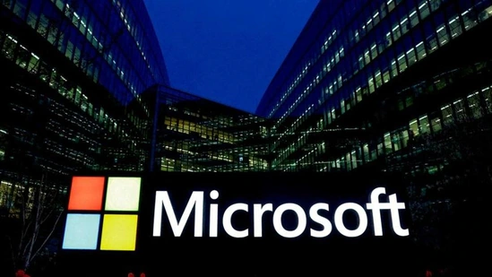

The global tech outage caused by a flaw in an update by a cyber security firm CrowdStrike for its "Falcon Sensor" software resulted in Windows PCs crashing. Microsoft systems across the globe crashed on Friday resulting in a tech outage caused by a flaw in an update by cyber security firm CrowdStrike for its "Falcon Sensor" software. Several devices started displaying a blue screen, which is informally known as “Blue Screen of Death", rendering the computers useless.
 HTSMARTCARD Go To Second Page